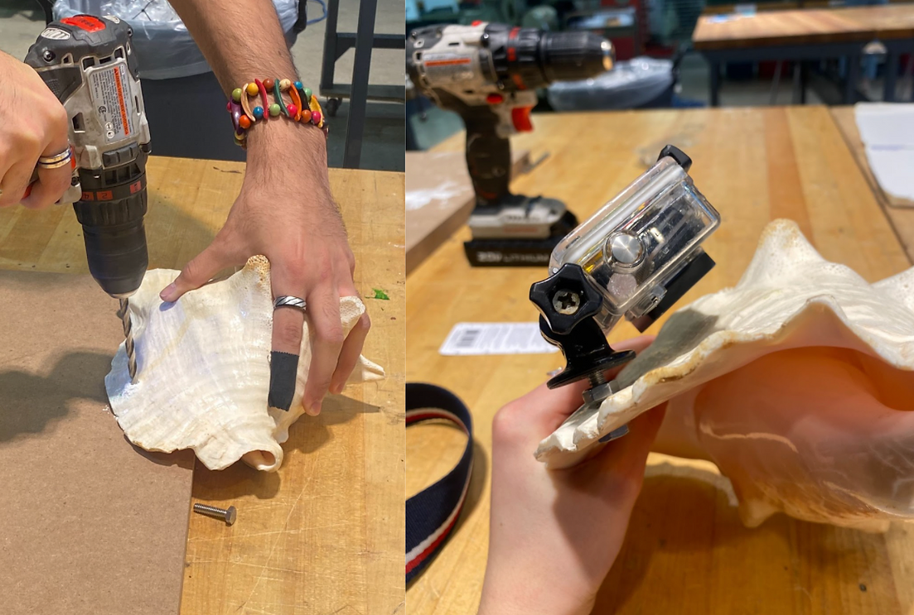
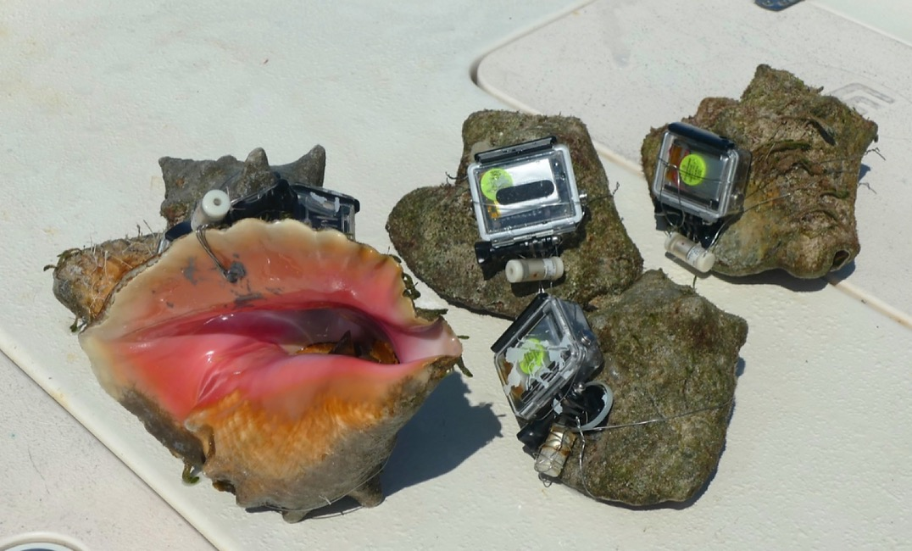
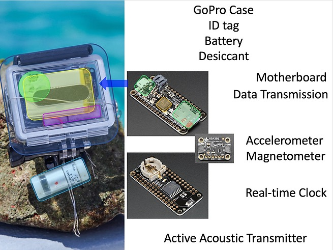
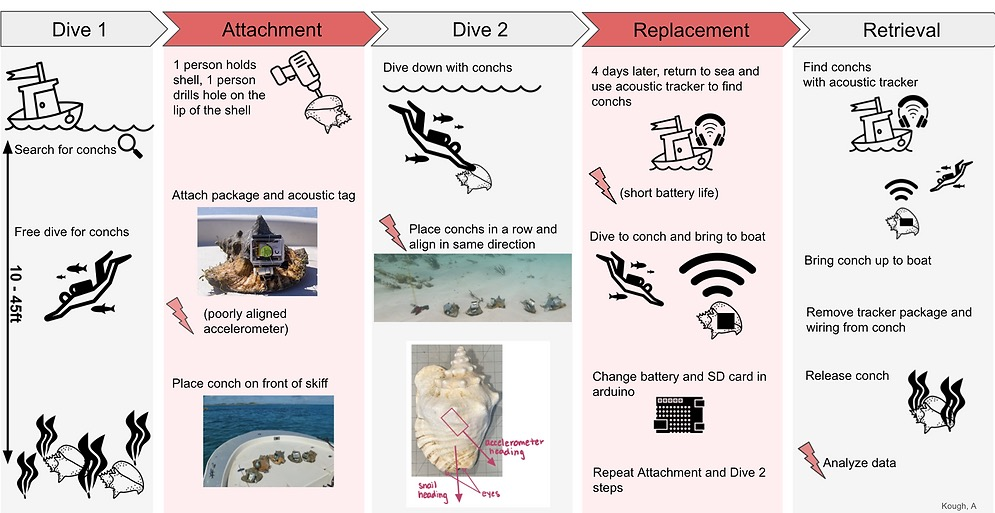

Queen Conch Snail Tracker
Interdisciplinary Product Design, September 2021-March 2022

Purpose
Improve the method of tracking Queen Conch Snails for our client, a marine biologist working at an aquarium in Chicago.
The marine biologist is tracking conch movement to inform where to designate marine protected areas (MPAs) to best help this species increase its population, which has declined in recent decades due to overfishing. Our client uses accelerometer data that he converts to directionality in order to map out the path of each conch.
Role
I managed group meetings by creating meeting agendas and updating the Gantt chart weekly. During the research phase, I contacted international experts and conducted interviews with them, increasing my confidence in communication. In the design phase, I invented and tested creative attachment methods.

Problem
Translating accelerometer data into directionality is difficult due to differences in the accelerometer heading and the conch heading. These discrepancies are caused by the varying topographical features across individual conch shells with no tools to measure the offset for each individual package. The attachment method for the tracker package (shown above) is also inefficient and takes too long.
Goals
Develop a method to minimize inconsistencies in accelerometer data.
Improve the ease of use of attaching the packages to the shells.
Reduce the number of steps involved to facilitate the experiment.
Tracker Package Components

User Journey

Process
Research: I contacted and set up meetings with a researcher at the University of Bonn to discuss bioinspired suction cups, and a researcher in Australia also studying Queen Conch. My teammates and I also contacted electronics professors at Northwestern to discuss our arduino accelerometer setup, and waterproofing electronics.
Ideation sessions: I led and participated in several ideation sessions for my project and for other projects in the class.
Prototyping,Testing, and Analysis: We tested several attachment methods, including adhesives, mechanical fasteners, and suction cups (not shown here). In order to keep the arduino in a consistent position during the study, I designed an arduino positioning cradle to be 3D printed and inserted into the case.